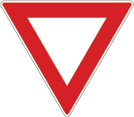
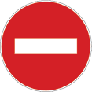

Three signs to understand first
Stop · R1
Come to a complete stop behind the stop line. If there is no line, stop in line with the sign. Continue only when it is safe. Slowing down and rolling through is not a stop.
Ask yourself: what must I do even when the road looks empty?

Yield · R2
Give way to traffic on the road you are joining. Slow down and stop if necessary. The important difference from a stop sign is that yielding does not always require a stop.
Ask yourself: whose movement must I avoid obstructing?

No entry · R3
You may not enter the road at this point. This is a restriction on entry, not a warning to proceed carefully.
Ask yourself: is this sign warning me, or prohibiting an action?
A way to study any new sign
- Name it. Look for its shape, colour and symbol. Then read the meaning rather than guessing from appearance alone.
- Describe the action. Say what a driver should do in your own words. “I must stop” is more useful than “it is a red sign.”
- Compare it. Put a similar sign beside it and explain the difference. Start with stop versus yield.
- Recall it later. Cover the explanation, test yourself and return to signs you confused.
Go beyond these three examples
These are regulatory signs: they give instructions or restrictions. Your preparation also needs warning and guidance signs, road markings and traffic signals. Do not treat a short list of familiar signs as the whole syllabus.
In K53 Study Guide, work through Road signs, Road markings and Road signals separately. Use a topic quiz to find signs that still need attention, then revisit the explanation before another attempt.
Quick check: does a yield sign always mean stop?
No. You must give way, slowing down and stopping when necessary. A stop sign requires a complete stop. Explain that difference before moving to the next sign.
Continue with the official material
This is an independent study aid with selected examples. For complete preparation, use the Road traffic signs manual and the South African Government’s learner’s licence guidance. K53 Study Guide is not affiliated with government and does not provide official tests or bookings.